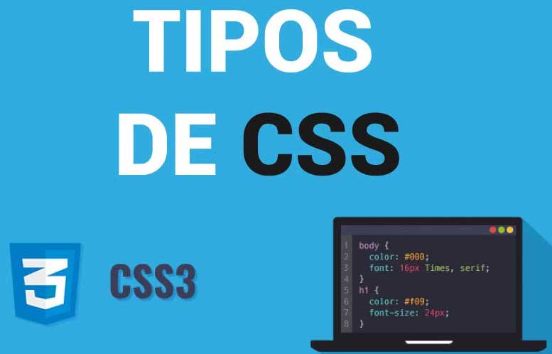
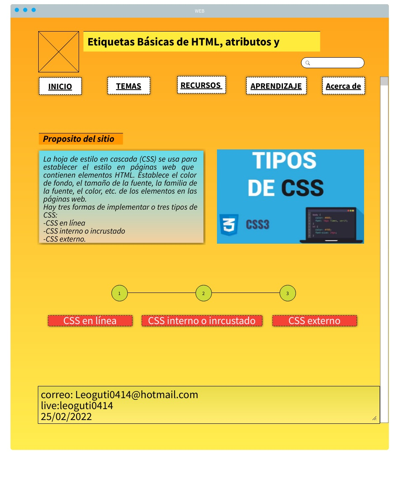

<DOCTYPE HTml>
</HTml lang="es">
<header>
    <center><h1>Etiquetas Básicas de HTML, atributos y valores</h1></center>
</header>
<nav>
        <ul>
            <li><a href="">Inicio</a></li>
            <li><a href="">Temas</a></li>
            <ul>
                <li><a href="">Tema 1</a></li>
                <li><a href="">Tema 2</a></li>
            </ul>
            <li><a href="">Recursos Digitales</a></li>
                <li><a href="">Recurso 1</a></li>
                <li><a href="">Recurso 2</a></li>
            <li><a href="">Aprendizaje</a></li>
            <ul>
                <li><a href="">Actividad 1</a></li>
                <li><a href="">Actividad 2</a></li>
            </ul>
            <li><a href="">Acerca de</a></li>
        <ul>
            <li><a href="">Autor</a></li>
           </ul>
        </nav> 
           <section>
            <cente><h2>Proposito del sitio</h2></cente>
            <p>La hoja de estilo en cascada (CSS) se usa para establecer el estilo en páginas web que contienen elementos HTML. Establece el color de fondo, el tamaño de la fuente, la familia de la fuente, el color, etc. de los elementos en las páginas web.
            Hay tres formas de implementar o tres tipos de CSS:
            CSS en línea
            CSS interno o incrustado
            CSS externo.
            </p>
           </section> 
        <article>       
    <head>
        <title>Inline CSS</title>
    </head>     
    <body>
        <p style = "color:#f72525;
                    font-size:50px;
                    font-style:italic;
                    text-align:center;">
CSS en línea</p>
<head>
    <title>CSS interno o inrcustado</title>
    <style>
        .main {
            text-align:center;  
        }
        .ewg {
            color:#af7802;
            font-size:40px;
            font-weight:bold;
        }
        .CSS interno o incrustado {
            font-style:bold;
            font-size:20px;
        }
    </style>
</head>
<body>
    <div class = "main">
    <div class ="ewg">CSS interno o inrcustado</div>
    <div class ="CSS interno o inrcustado"></p>
    </div>
</body>
<head>
    <link rel="stylesheet" href=" CSS externo.css"/>
</head>
<body>
    <div class = "main">
    <div class ="ewg">CSS externo</div>
    <div id ="CSS externo"></p>
    </div>
 </body>
 <html>
 <center></center>
 </html>
 <left><h3>Mockup de la página principal del sitio web</h3></left>
 <center></center>
 
        <footer>
    </ul>
    <li>CORREO: Leoguti0414@hotmail.com</li>      
    <li>SKYPE: leoguti0414</li>
    <li>FECHA: 25/02/2022</li>
    </ul>
       </footer>

        